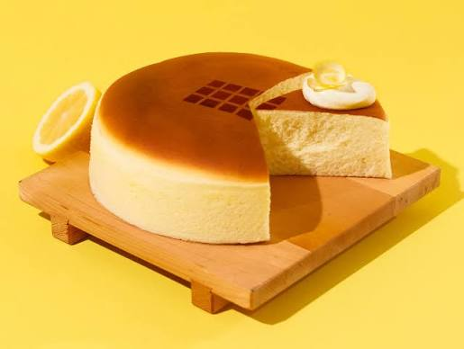

Username
Burrito

Burrito is approachable, always relaxed, and brings crazy humour even when feeling shy.
Burrito
Cheesy Cake
Approachable, relaxed, funny, and shy.
Quiet at first, always ready with a goofy line once comfortable, and sometimes can’t read the room.
Playing games, discovering what more I like, and eating burritos.
Turning everyday moments into clever jokes.
"Keep it cozy, keep it real."
Why did the burrito bring a blanket? To wrap up the conversation.

Cheesy Cake is the same heart as Burrito, just with a bit more sparkle and flair in the delivery.
Cheesy Cake
Burrito
Approachable, relaxed, funny, and shy.
Delivers the same gentle spirit with a more dramatic and colorful style, and sometimes can’t read the room.
Bright ideas, silly edits, making friends laugh unexpectedly, and eating cheesy cake.
Turning quiet moments into playful punchlines.
"Even shy jokes deserve the spotlight."
I told a cheesy joke in public; it was grate.